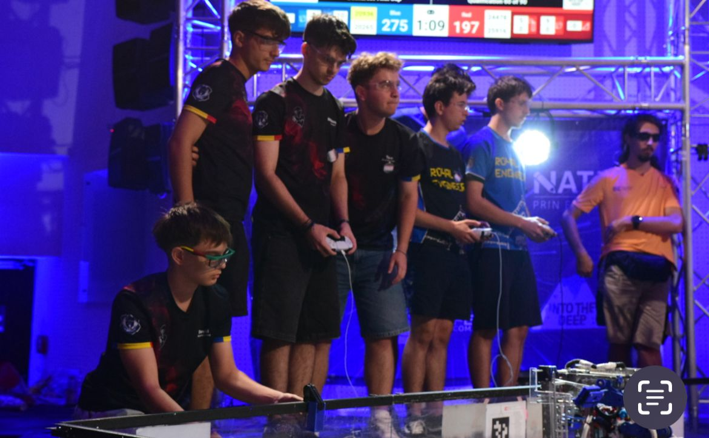

Echipa de Robotică a Colegiului Național „Bogdan Petriceicu Hasdeu”, Buzău
O mândrie deosebită a colegiului nostru este reprezentată de comunitatea Heart of Robots. Această echipă reunește elevi pasionați de mecanică, electronică, programare și marketing, care transformă idei abstracte în roboți complecși.
Activitatea în cadrul laboratorului îmbină teoria cu practica, oferind fiecărui membru șansa de a-și dezvolta abilitățile tehnice și spiritul de echipă. Elevii învață să lucreze sub presiune, să gestioneze un buget dedicat componentelor și să colaboreze strâns pentru a îndeplini cerințele tematicilor anuale.

Echipa participă activ la campionatul național FIRST Tech Challenge (FTC) România. Aici, elevii își testează roboții în meciuri intense și colaborează cu alte licee din țară.
Fiecare sezon competițional aduce provocări noi de inginerie, alianțe strategice pe teren și standuri creative unde echipa își prezintă identitatea vizuală. Pe lângă meciurile propriu-zise, membrii promovează valorile STEM în comunitate prin organizarea de demonstrații și evenimente educaționale.
